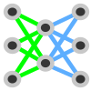

Neural Network Training#
Note
This manual is not intended as an introduction to deep learning, but to explain the functionality of MIA. For an introduction, please use the plethora of tutorials, books, original literature or other sources on deep learning.
The training of a neural network is the essential prerequisite to use the network as predictor.
Simply put, a neural network is trained in a supervised manner by reducing the error between the network output and the ground truth, resulting in a change in the network weights so that the network would predict an output that resembles the ground truth.
The image labels (=ground truth) for the network training are different for each supported application (see Applications).
Tip
The question of how many labels are needed to train a neural network is not easy to answer, as it depends on the difficulty of the task and the error that can be tolerated as a result.
An iterative training process is recommended:
Label some images as training images
Train a neural network with the training images
Predict some test images (that are not included in the training images)
Correct/Relabel the predicted images and include them in the training set
Retrain
Repeat until results are sufficient
The Training WIndow#
The Training Window can be openend by pressing  Train Model.
{kind=link}
The Training Window#
The Deep Learning Model#
The Deep Learning Architecture and the Model Backbone are important choices that highly define training time and capacity. Each application uses individual models, so please refer to Applications for details.
By checking Pretrained Net, weights from a neural network trained on imagenet data set are used. Using pretrained weights might decrease the training time and data needed for convergence. Some paramters are fixed (e.g. input channels or preprocessing) when using a pretrained network.
Training Parameter#
Classes shows the number of different possible classes of the neural network output. Classes can be defined in the class menu.
You can choose between Color and Mono, for color or monochromatic input images, respectively. For a mixed data set of monochrome and color images, select Color, otherwise all color images will be converted to grayscale, resulting in data loss.
The Batch Size specifies the number of images per batch that are processed during a single training step of stochastic gradient decent.
Tip
Reduce batch size if (gpu-)memory is insufficient
The Epochs sets how often all training images are used to train the network.
The Learning Rate is one of the most important hyperparameters during neural network training and defines the step size during loss function optimization. In Training Settings the learning rate can be customized during training.
The Down Scaling can be set to a value between 0 and 1, resulting in each input image being reduced by this factor before being fed into the neural network during training and inference.
Press  Application_Name to open the settings specific for that application.
Application_Name to open the settings specific for that application.
Press Settings to open deep learning settings.
Press Augmentations to open the augmentation settings.
{kind=link}
To finally start the training press Start Training button. After starting the training the Train Data window is opened.